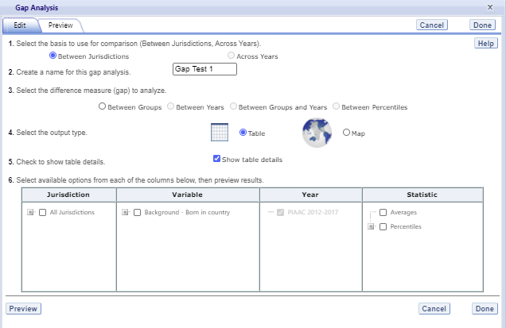

Chapter 4 PIAAC IDE Walkthrough
There are four general steps for exploring each IDE page (see exhibit 3). Each step is described in more detail in the following sub-sections.
Exhibit 3. What you will see in the IDE environment and what each step entails
4.1 1. Select Criteria
4.1.1 1.A. Overview
Your data query in the PIAAC IDE begins on the Step 1. Select Criteria screen (see exhibit 2, on next page).
Select a Display from the drop-down menus. Once the screen resets, you can choose one or more of the years and studies or All Years/Studies, Measures, and Jurisdictions for the data you wish to view or compare. Use the Reset button, located in the upper-right portion of the screen (just below the Help button), to clear selections and start over.
Click on a blue sideways-facing arrow (►) to open up a category, and click on a blue downward-facing arrow (▼) to close a category.
Exhibit 2. Selecting criteria

4.1.2 1.B. Display
Under Display, choose one of the three different NCES PIAAC IDE adult sample populations:
U.S. Adults, 16–74 (Household and Prison): This display contains U.S.-only comparable data from the PIAAC, including the 2017 U.S. Household Data (for ages 16–74, and 16–65), combined 2012 and 2014 U.S. Household Data (for ages 16–74, and 16–65), and Prison Data (for ages 16–74).
Young Adults, 16–34: This display contains internationally comparable data from the
3 international rounds of PIAAC (2012–2017 for all countries, except the U.S. which combined 2012–2014 data only) Household Data, ages 16–34. This display does not include the 2017 U.S. Household Data.Adults, 16–65: This display contains internationally comparable data from the
3 international rounds of PIAAC (2012–2017 for all countries, except the U.S. which combined 2012-2014 data only) Household Data, ages 16–65. This display does not include the 2017 U.S. Household Data.
Once a display is chosen, the screen resets and you can select one or more of the years and studies or All Years/Studies, Measure(s), and Jurisdiction(s).
4.1.3 1.C. Choose Year/Study(s)
In the same horizontal bar as the Measure and Jurisdiction sections, you have the choice of selecting PIAAC 2017 and/or PIAAC 2012/14 by checking the appropriate box if the Display chosen is U.S. Adults, 16–74 (Household and Prison). You have the choice of selecting PIAAC 2012–2017, ALL 2003–2008, and/or IALS 1994–1998 if the Display chosen is Adults, 16–65, or Young Adults, 16–34. To include data from all studies, check the All Years/Studies box to the left of the individual year and study options.
4.1.4 1.D. Choose Measure(s)
After choosing a Display, you can choose a Measure within the Select Criteria tab. Note that the PIAAC overall scales are the default and you can select more than one overall scale although analysis for each scale will be done separately. You can browse for other reporting scales using the Category and Sub Category lists or by using the Search function.
There are a number of continuous variables other than scale scores that you may choose as a measure of analysis. These variables are generally continuous variables from the international and U.S. national background questionnaires (such as earnings or hours of work per week) and derived variables from PIAAC, ALL, and IALS. Derived variables from PIAAC include indices of literacy, numeracy, and computer use at work and at home and imputed years of formal education, among others. Analysis of the continuous variables in terms of the continuous literacy, numeracy and problem solving TRE scale scores is not possible, but it is possible to analyze the continuous variables in terms of the literacy, numeracy, and problem solving proficiency level variables available in the list of Variables. For example, one cannot analyze the average number of hours of work per week in relationship to score, but one can analyze the average number of hours of work per week for adults at each proficiency level.
Percentage across full sample: The adults in the sample population that did not answer the assessment will be displayed along with those that did answer the assessment if you select the Percentage across full sample measure under the Population category and Population subcategory.
Reading components: There is a separate reporting scale for the Reading Components domain of the PIAAC survey. The Reading Components domain is used to measure literacy at the very low end of the spectrum, with components such as sentence completion, passage comprehension, and vocabulary. This domain was given to respondents who decided not to take the computer-based assessment or who did not pass a set of core information and computer technology tasks and failed a set of core literacy/numeracy tasks.
4.1.5 1.E. Choose Jurisdiction(s)
With your Measure(s), one or more of the years and studies or All Years/Studies selected, next choose at least one Jurisdiction.
Jurisdictions are found under OECD National Entities, OECD Sub-National Entities and Partners.
There is also a group category called International, with options to display the Average of All Jurisdictions and the Average of the Selected Jurisdictions. Please note that selecting Average of All Jurisdictions or Average of the Selected Jurisdictions increases the frequency of receiving an error message in the Build Reports step due to the high volume of information contained in these groups.
The general procedures for selecting one or more jurisdictions are as follows:
To open groups of jurisdictions, click on the arrow (►). Jurisdictions in the group are open and can be selected when the blue arrow points down (▼) (see exhibit 3).
Click the checkboxes next to the specific jurisdictions that you are interested in, or uncheck those jurisdictions that you wish to deselect. If you click the checkbox next to the group name (e.g., “OECD National Entities”), you will select all the jurisdictions within that group. If desired, uncheck the group name to deselect all.
If you want to close a group (for example, close the list of OECD National Entities jurisdictions in order to readily see the OECD Sub-National Entities jurisdictions), click the blue arrow pointing down (▼) next to the group name. The closed group’s arrow will now point to the right (►). Be advised that closing the group will not deselect your choices.
NOTE: The U.S. Adults 16–74 (Household and Prison) Display only includes data for the United States. The U.S. Household (16–74 years old), U.S. Prison (16–74 years old), and U.S. Household (16–65) are the only selections available in the Jurisdiction menu. However, users may choose to work with the U.S. prison sample, or one of the U.S. household samples, or select more than one for analysis as jurisdictions.
Exhibit 3. Choosing jurisdictions
To continue in the IDE, click the Select Variables button at the bottom right of the page or the tab at the top of the page to go to the next screen (see exhibit 3).
4.2 2. Select Variables
4.2.1 2.A. Overview
Step 2, Select Variables, can only be accessed after choosing criteria at step 1, Select Criteria.
To continue your data query and edit a report, you must choose at least one variable on this screen. You can browse for variables using the Category and Sub Category lists or by using the Search function (see exhibit 4). You can return to this screen to change variable selections at any time.
Exhibit 4. Select variables overview

4.2.2 2.B. Search Using Category and Sub Category Lists
On the Select Variables screen, choose at least one variable for your report. One way to do this is to search for variables using the Category and Sub Category lists.
If you do not wish to choose from any of the specified categories and subcategories, then select All adults in the Major reporting groups sub category.
The variables shown are tied to the criteria you selected at step 1 (Measure, one or more of the years and studies or All Years/Studies selected, and Jurisdiction), which are indicated at the top of the screen. To change any of these criteria, return to step 1, by clicking on Select Criteria.
To browse for variables, get details about them, select them, and view them:
- Click the blue arrows to open and close categories and subcategories > of variables (see exhibit 5).
Click details or hide details to show or hide the full title > of a given variable, the PIAAC ID (e.g., GENDERR), and the values > (i.e., variable labels). Note that some variables have the same or > similar short titles, but comparing details will show you how they > differ. See the example in exhibit 5, which shows Last job - > Employee or self-employed and Last Job - Economic sector. > The differences between these two variables are described in the > details.
Click the checkbox next to a variable to select it for your > analysis/report. You will see the count increase next to View > Selected that appears above the Variable list.
Click the View Selected tab to see the variables you have > chosen. To return to the full list of variables by category, click > the View All tab to the left of the View Selected tab.
Click Reset button in the upper-right portion of the screen if > you wish to deselect all the selected variables.
NOTE: Remember to select the year/study for which you wish to build a report and make sure that data are available for your chosen year/study and variables.
Searching variables is an option from the Search box. See Section 2.C Search Function (on next page) for more details about this function.
Exhibit 5. Select variables using category and sub category lists

When you have selected the variable(s) you want to include, continue by clicking the Edit Reports button at the bottom of the page or the tab at the top of the page to go to the next screen.
4.2.3 2.C. Search Function
The second way to search for variables is to use the Search function on the Select Variables screen.
Type a term in the Search box and click Go (or hit “Enter” on your keyboard) to find variables by keywords in the question and/or details for the variable (see exhibit 6). The search function operates on whole words or on an exact phrase (if it is contained in quotes). To search for less than a whole word or exact phrase, include an asterisk (*) after the search term. If you use multiple keywords, “and” is assumed. You can narrow your search by using “or,” “not,” or “and not.”
Exhibit 6. Select variables using the search function
When you have selected the variable(s) you want to include, continue by clicking the Edit Reports button at the bottom of the page or the tab at the top of the page to go to the next screen.
4.3 3. Edit Reports
4.3.1 3.A. Overview
You can access step 3, Edit Reports, after choosing criteria at step 1, Select Criteria, and choosing variables at step 2, Select Variables. The IDE will automatically build reports based on your selections from steps 1 and 2. However, at step 3, the Edit Reports phase, you may modify your selections for each report. At this step, you can:
preview and edit the layout of your reports;
copy reports or create new reports based on the variables selected;
change formatting options, such as number of decimal places to display, for all reports (these may also be changed in individual reports, but format options can overwrite previous edits);
change statistics options, such as average scale scores and achievement levels, for all reports (these may also be changed in individual reports, but statistics options can overwrite previous edits);
select reports to be built into tables and charts at step 4, Build Reports; and
delete reports.
Using your chosen criteria, the PIAAC IDE will return a separate data report for each variable you have chosen. If you have selected two or three variables (not counting All adults), you will also see a cross-tabulated report for these variables. If you have chosen four or more variables you will get tables for each variable, but a cross-tabulation report will not be produced. If your selected criteria include more than one Measure (e.g., overall literacy scale and one or more continuous variable from step 1, Select Criteria), a separate set of data reports will be generated for each Measure (see exhibit 7).
Exhibit 7. Edit reports overview

4.3.2 3.B. Preview Report
Select Preview, in the Action column (see exhibit 7), to see how your report will be laid out. The preview will not provide actual data but will show how the data will be arranged in rows and columns (see exhibit 8). You can select Preview at any time to see how your changes will affect the report’s final layout.
Exhibit 8. Using preview report
4.3.3 3.C. Edit Report
To edit the report, select the Edit command, in the Action column, next to the report number (see exhibit 7). (Another way to edit a report is to select the Edit tab when you are previewing a report.) The following can be done using the Edit command (see exhibit 9):
- Name your report. You have the option of giving each > report a distinctive name, up to a limit of 50 characters, using > only letters, numbers, spaces, underscores, and hyphens. > (Otherwise, by default, the report is named Report 1, Report 2, > etc., or Cross-Tabulated Report 1, Cross-Tabulated Report 2, etc.)
Select a Measure. You can choose a measure if more > than one was selected at step 1, Select Criteria.
Select which jurisdictions, variables, years (if applicable), and > statistics to include (out of the selections > previously made at steps 1 and 2). You can select up to two > statistics options from the following: averages, > percentages, standard deviations, and percentiles. > (For further information, see Section 3.G. Statistics > Options.)
Create a new variable. To create a new variable while > editing a report, click on Create New… under the > Variable heading. Section 3.D explains the process for > creating a new variable.
Change the table layout. By dragging elements to > determine which items will appear in rows and which will appear in > columns. Some of the arrangements will not permissible, but a > pop-up alert will explain this.
Exhibit 9. Editing reports

To save changes, make sure to select Done in the upper-right portion of the screen before closing the Edit Report window. If the Done button is not pressed before the Edit window is closed, you may encounter a system error.
4.3.4 3.D. Create New Variables
To create a new variable, select Edit, in the Action column, and select Create new… under Variable (see exhibit 9). The new variable is created by combining values for an existing variable. The steps are as follows:
- Select the variable for which you wish to combine values.
Select the values you want to combine by checking the boxes to the left of the values (see exhibit 10).
Create a name for the new value, and press Create. The collapsed values will appear in gray to indicate that they have already been used.
Wait for the screen to refresh, and press Done.
Exhibit 10. Creating new variables

The new variable will appear in the Variable list in the Edit Report window or Create New Report window, designated as “collapsed.”
Check the box next to the new variable to view it in the report. You can click Preview to see how the table will be laid out before retrieving data.
A new variable that you create is applicable only to a specific report; it does not apply to the other reports listed on the Edit Reports screen. For example, if you selected multiple measures of literacy for analysis, then you would need to create the new variable for each measure, or create a copy of the report and edit it accordingly. To do the latter, click on Copy report on the Edit Reports screen (copied reports appear at the end of the list of reports) and then, for the new copy, click on Edit (using the above example, you can change the measure and give the report a new name). You cannot save the new variable for reference or future use.
You can repeat the process and combine different values of a variable to create additional new variables. Using the Create New Report function, you can create a new report for each new variable that you create. (For further information, see section 3.E. Create New Report.)
If you selected two or three variables from which to create new variables, you can repeat the process for each of them. Using the Create New Report or Edit Report function, these collapsed variables will be listed and available for cross-tabulation (see exhibit 11). If you have chosen four or more variables (not counting All adults) you will not get the cross-tabulation. You can click Preview to see how the table will be laid out before retrieving data.
Exhibit 11. Edit reports with collapsed variables
4.3.5 3.E. Create New Report
From the main Edit Reports screen, clicking on Create New Report brings up the same options as Edit Report, but with no checkboxes marked and without any new variables you may have created. Thus, Create New Report (see exhibit 12a and 12b) provides a clean slate for your selections from the first two steps, Select Criteria and Select Variables. Each new report you create will appear at the end of the list of reports. If you do not give the report a specific name, it will be called “New Report.” If you create a second new report, the system will attempt to save it with the “New Report” name again; however, it will fail and will prompt you to enter a different name in the Name text box.
Exhibit 12a. Creating new reports

Exhibit 12b. Creating new reports

4.3.6 3.F. Format Options
From the main Edit Reports screen, clicking on Format Options will allow you to make formatting changes applicable to all the reports listed. The following formatting options are available using this function (see exhibit 13):
- Variable Labels (Long) displays a more detailed description of the variables selected in a query than the default short label. For variables from the background questionnaire, the full text of the question is displayed. Be advised that the length of the extra detail may sometimes interfere with table formatting.
Show data for values categorized as “missing” will include the percentage of adults in the total sample or in a reporting group for whom membership in a particular response category is unknown because no response was given by the adults. The percentage of “missing” will be shown in the right-most table column. Missing data are available only for queries that involve percentages as the statistic type. Unless you check this option, the default is for missing responses not to be included in the percentage distribution shown.
Year Order allows you the option to display the most recent year first or the oldest year first.
Decimal Places allows you to specify the level of precision for a particular statistic. Depending on the value range of the dependent variable (for example, the dependent variable “PIAAC Literacy: Overall scale \[PVLIT\]” ranges from 0 to 1000; the dependent variable “Index of use of ICT skills at home (derived) \[ICTHOME\]” ranges from 0 to 4), the default decimal places for a report could be from zero to three. Also, standard errors will be shown to one more decimal place than is shown for a particular statistic. For example, if you request that average scores be displayed to one decimal place (by default, the average scores is displayed to be the whole number), the corresponding standard errors will be displayed to two decimal places. If you export to Excel, you will be able to increase the number of decimal places in most cases. Note that only integer-level precision is allowed for percentages; that is, the number of decimal places is fixed at “none” for percentages and the corresponding standard errors are shown to one decimal place.
Include gives you the option of showing standard errors. By default, standard errors are shown inside parentheses, but you have the option of choosing to show them without parentheses. You can preview the effects of your selection in the Sample Display area (see the blue-shaded box at the bottom of exhibit 13).
Exhibit 13. Format options
Be advised that the choices you make in the Format Options window will apply to all reports and cannot be changed for individual reports. Use the Reset button, located in the upper-right portion of the main Edit Reports screen (just below the Help button), to restore the Format Options to the default settings (although caution is advised, as this will also delete any new reports that you have created).
4.3.7 3.G. Statistics Options
Available only from the main Edit Reports screen, clicking on Statistics Options allows you to designate up to two statistics. The selections you make are applicable to all the reports listed, although you can also change the statistics for an individual report when you edit it. (For further information, see Section 3.C. Edit Report.)
The following statistics options are available (see exhibit 14):
Averages. For the PIAAC assessment, adult performance is reported on scales that range from 0 to 500. PIAAC reports the average scale score for a variety of demographic samples of the adult population (e.g., the average scale score in literacy for female adults). Averages for other continuous variables are in the same units as the variables themselves (e.g., average hourly earnings for hourly earnings variable). By default, the standard errors of the scale scores are shown in parentheses.
Percentages. This statistic shows the percentage of adults as a row percentage. For example, if the first column lists jurisdictions, then each jurisdiction will display its own percentage distribution across its row. By default, percentage distributions do not include missing data. For information on how to show data for values categorized as missing, see Section 3.F. Format Options.
Standard deviations. The standard deviation is a measure of how widely or narrowly dispersed scores are for a particular variable. Under general normality assumptions, 95 percent of the scores are within two standard deviations of the mean. For example, if the average value of a variable is 500 and the standard deviation is 100, it means that 95 percent of the values in this variable fall between 300 and 700. The standard deviation is the square root of the variance.
Percentiles. This statistic shows the threshold (or cutpoint) for the following:
10th percentile—the bottom 10 percent of adults
25th percentile—the bottom quarter of adults
50th percentile—the median (half the adults scored below the cutpoint and half scored above it)
75th percentile—the top quarter of adults
90th percentile—the top 10 percent of adults
Exhibit 14. Statistics options
As previously noted, the selections you make in Statistics Options will be applied automatically to all reports, although you can change the statistics for an individual report if you use the Edit command in the Action column. Be advised that if you use Statistics Options after editing the statistics in one or more of your individual reports, the statistics options selected will overwrite your previously edited selections. If you wish to use the same criteria and variables in a report with a different selection of statistics, consider using the Create New Report function to generate a new report with different statistics. (For further information, see Section 3.E. Create New Report.) You can also make a copy of an individual report.
You can use the Reset button, located in the upper-right portion of the main Edit Reports screen (just below the Help button), to restore the Statistics Options to the default setting, which is the average for all reports (this will also delete any new reports that you created).
Not all statistics are available for all reports. Their availability depends on other selections you have made to define the content and format of your report:
Percentages will not display if jurisdictions or years appear in > columns.
If proficiency levels are selected in the variable section, only > average scores and percentages will be displayed.
Please note that the statistics produced by the IDE may not match the statistics in reports published by the OECD or in the OECD PIAAC IDE, due to differences in certain statistical standards. In particular, NCES and the OECD may differ in the minimum sample sizes required for publishing adult scores, as well as in the requirements for stability of estimates for results to be reportable. For more details on the differences in statistical standards, refer to the technical notes in the NCES First Look report.[^1]
4.3.8 3.H. Select Reports to Build
As you edit your reports, you can give distinct names (up to 50 characters) to differentiate them, as well as make changes to the jurisdictions and variables previously selected, the statistics, and the layout of the rows and columns. (For further information, see Section 3.C. Edit Report.) You may make copies of reports with these changes.
Before proceeding to step 4, Build Reports, you can preview each report for which you want to retrieve data by using the Preview action. To decrease processing time as you move to step 4, you can uncheck any reports for which you do not wish to retrieve data. By default, all reports are checked. To uncheck one or more reports, you can either uncheck the reports individually or click on the All box. (Doing the latter will uncheck all of the reports and allow you to check only those for which you wish to retrieve data.) In the example that follows (see exhibit 15), data will be retrieved for all reports.
Exhibit 15. Selecting reports to build
If you wish to delete a report from the list of reports, click Delete (see 1 in exhibit 15) in the Action column. Use the Reset button (see 2 in exhibit 15), located in the upper-right portion of the screen (just below the Help button), to restore the deleted reports with the criteria and variables selected in the previous steps (although caution is advised, as this will not restore any new reports or variables that you created in the session and will delete any new reports and variables that you most recently created; the Reset action will also restore the Format Options and Statistics Options to the default settings).
To continue to the last step in the IDE, click the Build Reports button at the bottom of the page (see 3 in exhibit 15) or the tab at the top of the page to go to the next screen.
4.4 4. Build Reports
4.4.1 4.A. Overview
You can access step 4, Build Reports, after choosing criteria at step 1, Select Criteria, in which case the default report built will provide average data for the All Adults variable. After step 1, you may also go on to steps 2 and 3, where you can select additional variables and edit reports, before moving on to Build Reports. In Build Reports, you can do the following:
Generate a data table for each report selected in step 3, as shown > by the Select Reports drop-down feature. By default, all > reports are checked, although you can uncheck any reports for > which you do not wish to retrieve data. (For further information, > see Section 3.H. Select Reports to Build.)
Export and save data tables into various formats using the Export Reports button. The output formats include HTML (print-friendly), Microsoft Word, Microsoft Excel, and Adobe PDF (in NCES PIAAC only)
Select the Chart tab to create and customize charts for each report and save them for export in the above formats.
Select the Significance Test tab to run a significance test on your results and customize it.
Exhibit 16. Building reports overview
4.4.2 4.B. View Reports as Data Tables
Once you click on Build Reports, the sentence “Some queries may take up to two minutes to process.” will appear on your screen (see exhibit 17). Some reports will take longer than others to process, so please do not hit the “Back” button on your browser during this stage. Your table will appear once the processing is complete. To select a different table to view, go to the Select Report drop-down menu and choose the table of interest. To change the formatting or statistics options of a table or to generate a table from a report not included in your selection, return to step 3, Edit Reports.
Exhibit 17. Processing data
4.4.3 4.C. Charts
To create a chart, go to Select Report on the Build Reports screen to choose the report of interest from the drop-down menu, and then click the Chart link (see exhibit 18).
You will be able to create many types of charts and customize them. Section 4.E. Create Charts – Chart Options provides a summary of the available features and how they can be customized.
Exhibit 18. Viewing reports as charts

4.4.4 4.D. Create Charts
When you click Chart, you will first make selections pertaining to Jurisdiction, Year/Study, and Statistic, which are data options of the chart (see exhibit 19). All Jurisdictions and Studies are selected by default, while you can only choose one Statistic. Uncheck any of the criteria that you do not wish to chart, as long as you have one selected in each category.
Exhibit 19. Data options for charts
Next, you can make selections regarding the chart options located below on the same page.
Select Bar Chart, Column Chart, or Line Chart (see 1 in > exhibit 20). If the Percentiles Statistic is selected, you can > also select from a Percentiles Chart option.
After selecting a chart type, change any data dimensions from the > drop-down menus for Bar, Column, or Line Values and > Values Grouped by (see 2 in exhibit 20). Any new variables > that you created at step 3, Edit Reports, will be available > for selection, but only if you selected the variables (by clicking > the checkbox next to them) and pressed Done after you edited > the report.
Create your chart by clicking the Create Chart button in the > lower-right corner (see 3 in exhibit 20).
Exhibit 20. Chart options
After creating your chart, you can do the following (see exhibit 21 as an example of a Percentile Chart and exhibit 22 as an example of a Bar Chart):
Use the drop-down menus to change the jurisdiction and other > variables as applicable (see 1 in exhibit 21).
Place your cursor over the bars of the chart to see the data points > and value label(s) (see 2 in exhibit 21).
Exhibit 21. Percentile chart

Exhibit 22. Bar chart

You can choose “Back to Chart Options” (located in the upper-left corner, below the Chart link) to make more changes.
To make an additional chart from the same report or table, click the Chart link on the Build Reports screen. If you do not start the chart process again by clicking the Chart link, the new chart will overwrite the previous one.
If you wish to make charts from other reports, select a different report from the Select Report drop-down list. If you do not see the other reports that you would like to make charts from, they may not have been selected in step 3, Edit Reports. Go back to step 3 and check the reports you want to use for making charts. When you advance to step 4, Build Reports, the reports will appear in the Select Report drop-down list. If you need to create new reports, go back to step 1, Select Criteria, and/or step 2, Select Variables. Remember to export any completed charts you want to save using the Export Reports function before leaving the Build Reports screen. Otherwise, you will lose the charts you have created when going back to step 1, Select Criteria. (For further information, see Section 4.H. Export Reports.)
4.4.5 4.E. Significance Tests
Tests for statistical significance indicate whether observed differences between assessment results are likely to have occurred because of sampling error or chance. “Significance” here does not imply any judgment about absolute magnitude or educational relevance. It refers only to the statistical nature of the difference and whether that difference likely reflects a true difference in the population.
With your report of interest selected, click the Significance Test link, which is located to the right of the Chart link (see exhibit 22). You first need to decide which variable you want to test and the criterion by which you want to test it (i.e., between jurisdictions, within variables, or across years). You will compare or “look across” the variable’s range of values, so it must have more than one value. You can look across jurisdictions for a variable (that is, compare two or more jurisdictions) or you can look across the values within a variable for a single jurisdiction. Once the primary criterion is chosen, all other criteria must be restricted to a single value.
The general steps for running significance tests are as follows (see exhibit 23):
- In the Significance Test window, select Between > Jurisdictions, Within Variables, or Across Years. Then, > select the appropriate jurisdiction(s), variable(s), one or more > of the years and studies, and statistic(s). For Between > Jurisdictions, select at least two jurisdictions. For Within > Variables, select one or more jurisdictions. For Across > Years, more than one year/study needs to be selected.
Enter a Name limited to 25 characters, using only letters, > numbers, spaces, underscores, and hyphens (otherwise, by default, > the test is named “Sig Test 1”).
Select the output type as either Table or Map or > Comparison. The table option will show the significance test > results as a matrix. The comparison option will show the > jurisdictions selected which are significantly higher, not > different, or lower to each other in score and statistical > significance. The map option will show the significance test > results on a world map, highlighting the selected jurisdictions > different from the one that has been identified as the benchmark. > Identifying a benchmark jurisdiction is done on the map itself > (see exhibit 25). The map output is only available when Between > Jurisdictions is selected in the first step.
Additional options allow you to select Show Score Details to > display the estimates and standard errors for the table cells. If > you selected a map, this option is not applicable, as the map will > automatically show score details.
Click the Preview tab located in the upper-left corner, or the > Preview button located in the bottom-left corner.
Click the Edit tab in the upper-left corner of the screen if you > wish to go back and make changes to the selections you made for > running the significance tests.
Click the Done button in the upper- or lower-right corner of the > screen to run the significance tests.
Exhibit 23. Significance test options

When the table option is selected, you will get a significance test matrix in which you will see the differences and p values. Using the symbols shown in the legend of the matrix, an indication is also provided of whether one estimate is significantly lower or higher than another estimate or whether there is no significant difference (see exhibit 24). Most comparisons are independent with an alpha level of .05, except for within-jurisdiction comparisons on any given year, which are dependent with an alpha level of .05. For example, gender differences are treated as dependent samples with standard errors computed taking this dependency into account.
For more information on the significance testing between years/studies, see section 5. Statistical Notations and Other Notes under Linking error.
Exhibit 24. Significance test table output
Exhibit 25. Map of significance tests

When the map option is selected, a global map is shown with the selected jurisdictions shaded (see exhibit 25). The focal jurisdiction is shaded in teal green and represents a comparison for all the other jurisdictions. The other jurisdictions are shaded in colors that indicate whether they are higher, lower, or not significantly different from the focal jurisdiction on whatever measure has been selected. (Note that a light shade of gray is the default color for jurisdictions categorized as “not selected for comparison.”) When you scroll over a jurisdiction a text bubble pops up describing the difference between that jurisdiction and the focal jurisdiction. At any point, you may choose a different focal jurisdiction by selecting another jurisdiction of your choosing. You may also choose a different variable category for comparison by using the drop down menu above the map.
4.4.6 4.F. Gap Analysis
Gap Analysis is included in the IDE to compare differences in gaps shown in a map, table, or chart. These gap differences can be compared between jurisdictions and/or across years.
Exhibit 26. Gap analysis link selection
With your report of interest selected, click on the Gap Analysis link, which is located to the right of the Significance Test link (see exhibit 26). You will need to decide which variable you would like to test (e.g., gender) and the basis to use for comparison (i.e., between jurisdictions or across years). The difference measure, or gap, can be viewed between groups, between years, between groups and years, or between percentiles within the selected variable. For example, if you compute average literacy scores for two jurisdictions at two time points for males and females, you can:
at one time point, compare the male-female gap in one jurisdiction to the male-female gap in another jurisdiction;
compare the male-female gap at two time points within a jurisdiction;
compare the difference between the male-female gap at two time points in one jurisdiction to the difference between the male-female gap at two time points in another jurisdiction; or
compare the gap for females at two time points in one jurisdiction to the gap for females at two time points in another jurisdiction.
Exhibit 27. Gap analysis options

The steps for running a gap analysis are similar to those for conducting a statistical significance test (see exhibit 27). Thus, to run a gap analysis, follow the instructions under Section 4.E. Significance Tests, noting the following differences:
The Gap Analysis link should be selected, not the Significance Test link.
The gap analysis does not have a Within Variables option for analysis; the options are Between Jurisdictions and Across Years.
The difference measure (gap) of analysis must be selected from the following: Between Groups, Between Years, Between Groups and Years, and Between Percentiles (if variables are selected for which a difference measure is not feasible, the difference measure option will not appear as available in the Gap Analysis menu).
The gap analysis output is presented in a format similar to that of the significance test output, with one difference: the difference estimate shown in the output is the difference between the gaps selected for analysis. Note that you will still see the significance of these differences just like in a significance test. For example, exhibit 28 shows the difference between jurisdictions in the average problem solving in technology-rich environments score gap between males and females.
The gap analysis function computes and statistically tests differences between average value/score, percentage, or percentile gaps. Note that the reference group for the gaps is kept constant during the analysis, as opposed to taking the absolute value of the gaps. Therefore, the gap analysis tests whether the magnitude of the gaps differ from each other only when the gaps go in the same direction (e.g., comparing a 5-point gender gap favoring females in one jurisdiction with a 15-point gender gap favoring females in another jurisdiction).
Exhibit 28. Gap analysis output

NOTE: A gap analysis across years cannot be combined with the Between Years or Between Groups and Years difference measures, so you will select the difference measure Between Groups, or, if you have selected percentiles as one of your statistics, you may choose Between Percentiles.
4.4.7 4.G. Regression Analysis
Regression Analysis is included in the IDE to test for trends across more than two data points. The type of analysis performed in this feature of the IDE is referred to as linear regression within the field of statistics.
Exhibit 29. Regression analysis link selection

A regression analysis can be performed based on the selections that were made to build your table in the IDE by selecting the Regression Analysis button above the table (see exhibit 29). The Measure, or continuous variable, that you selected in Step 1 and that is displayed in your table will automatically become your dependent variable for the regression analysis (in exhibit 29 this is “PIAAC Literacy: Overall scale”). Please note that continuous variables cannot be used as independent variables. The variables that you selected in Step 2 and that are displayed in your table will become your independent variable options for the regression analysis (in exhibit 29 this is “About yourself – Learning strategies – Relate to real life”).
Exhibit 30. Regression analysis options

The general steps for running a regression analysis are as follows (see exhibit 30):
In the Regression Analysis pop-up window, enter a Name limited to 25 characters, using only letters, numbers, spaces, underscores, and hyphens (otherwise, by default, the test will be named “Regression 1”).
Select the appropriate jurisdiction, year, and independent variable(s) for analysis. Please note that you may only choose one jurisdiction and year at a time, but you may choose up to 3 independent variables to be in your report. In order to use up to 3 variables, you must have already created and selected a cross-tabulated report (by selecting 3 variables in Step 2, Select Variables).
Click the Preview tab located in the upper-left corner to view the table format into which your output will be populated. In the Preview tab, an “X” denotes where the output will display.
Click the Edit tab in the upper-left corner of the screen if you wish to go back and make changes to the selections you made for running the analysis.
Click the Done button in the upper- or lower-right corner of the screen to run the regression analysis.
After you have clicked Done, your regression analysis output will load onto the screen (see exhibit 31). A 0-1 contrast coding is used to code the independent variable, where the first subgroup of the independent variable is the reference group. Using dummy-coded variables in a linear regression is useful for comparing each subgroup against a reference group. For example, in exhibit 31, if the subgroup “Not at all” is the reference group for the independent variable About yourself – Learning strategies – Relate to real life \[IQ04B\], the IDE creates a “Very little” dummy variable (1 for respondents who answered “Very little,” 0 otherwise), a “To some extent” dummy variable (1 for respondents who answered “To some extent,” 0 otherwise), a “To a high extent” dummy variable (1 for respondents who answered “To a high extent,” 0 otherwise), and a “To a very high extent” dummy variable (1 for respondents who answered “To a very high extent,” 0 otherwise).
Exhibit 31. Regression analysis output

Using the output from exhibit 31 you can compare the average literacy scores of adults who report “Not at all” to the background question to average literacy scores of adults who report “Very little,” “To some extent,” “To a high extent,” or “To a very high extent” to the background question. When a single dummy-coded variable is used in a regression, the intercept is the mean of the reference group (e.g., 216.0766), and the regression coefficient is the difference between the mean of the reference group and the group identified (coded 1) with the dummy-coded variable (e.g., 14.8473 for adults who report “Very little” to the background question). Since the regression coefficients are presented with a standard error and a t value, these can be used to test whether a difference between means is statistically significant. Under the Significance column in the output you will see 3 possible signs: 1) < signifies a significant negative difference, 2) > signifies a significant positive difference, and 3) x signifies the difference is not statistically significant.
4.4.8 4.H. Export Reports
Click on the Export Reports button/arrow located on the right side of the Build Reports screen to save or print your tables, charts, and significance tests. The report names that appear in the Export Reports window are those that were checked off at step 3, Edit Reports.
Exhibit 32. Export report options

Check the files you want to export and select one of the file formats: HTML (print-friendly), Excel, Word, or PDF (see exhibit 32). All reports that you select at the same time will be exported in one file. In the Excel format, you will be able to increase the decimal places visible (wherever more precision is available in the database). Because there are many different operating systems in use, you may get an error message with Excel or one of the other formats. Usually, this will not affect your ability to export, so please wait for the software errors to resolve.